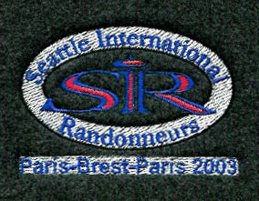
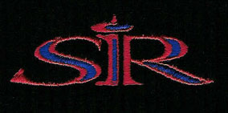

LOGO CLOTHING
SIR has worked with Land's End to make SIR logo clothing available to members. The logo will be embroidered, similar to the sweatshirts that were ordered in 1999 after PBP. The tagline below the logo will say: 'Paris - Brest - Paris 2003'.
 The sample was dark gray polarfleece, which shows through around the 'SIR' on the logo. This will be replaced by whatever fabric a person selects. Bill had them add the ivory background to the oval and tagline to have that stand out more.  This is the logo on the caps.
HOW TO ORDER
You will be able to select from Polartec jackets or vests, sweats, polos, caps, courier bags -- anything that is listed on the Land's End 'Business Outfitters' web site. Here are the details:1. Ordering:
I will place a single, consolidated order so that we can minimize shipping costs, and also take advantage of any quantity discounts. You will need to email me with your order. To see what's available, go to the Land's End Business Outfitters site at: http://ocs.landsend.com/cgi-bin/ncommerce3/ExecMacro/corpsales/CSM_HOME.d2w/report?store_name=corpsales, then go to "Products". List the items you want in an email sent to me (bdussler@attbi.com). You should be able to cut and paste everything but the quantity right off the web site and into the email.To make it easier for me to process the orders, please:
- include SIR clothing order in the subject line
- list the items in the following format, with each item on a separate line:
Item number Description Size Color Qty For example:
056358 Men's Regular Short Sleeve Jacquard Polos M Blue/True Navy 2 If you would like to get a catalog, call Land's End at 1-800-338-2000 to request one.
Note that I will reply with an email confirming your order including the total cost.
2. Cost
The price of each article will be listed on the Land's End site. The additional cost to embroider the SIR logo is $8.10. There will be no sales tax. SIR will pick up the shipping costs and logo setup fees.There is a 6 item minimum quantity for each product category. You can tell the category by the little colored letter by the product description. For example, if the consolidated order includes 3 Tactel Crews and 3 microfiber jackets, we will meet the minimum for that category. We can still order items from a category that does not meet the 6-item minimum, but the charge for applying the logo will be double ($16.20 per item). I will notify you if an item you have ordered is in that situation.
3. Order deadline
I will need to receive all orders by July 7, 2003.4. Payment
After I process the order and calculate any discounts, I will contact people to confirm their order and final cost. Please send checks (made out to SIR) to:
Bill Dussler
12709 Shorewood Pl SW
Burien, WA 981465. Shipping
Items will be shipped to Sammamish Valley Cycle, 8451 164th Ave Ne Redmond, WA (open 10-7 M-F, 11-6 Saturday and 12-5 Sunday). I'll notify people when their orders are available for pickup at the store. We should also have them available for pickup at SIR rides. Note that you will need to have already paid for your order before it will be released for pickup.Questions? Send me an email! Bill Dussler bdussler@attbi.com.